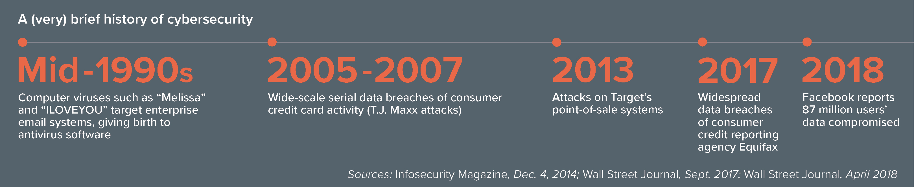

Networked computer systems and the data they store and transmit have been the target of threats and attacks ever since the early days of the internet. As digital systems have become ubiquitous in our professional and personal lives — including the meteoric rise of mobile devices, the proliferation of social media and the rapid expansion of connectivity — cyberattacks have become persistent risks that require vigilance, ongoing analysis and pre-emptive procedures.
Today, ransomware, fileless malware and nation-state attacks dominate the cybersecurity conversation, one that has expanded beyond IT teams to involve the entire C-suite. Companies are shifting from previously reactive stances to more proactive ones. Real-time threat analysis, breach detection and predictive modeling all signal a significant shift away from information security toward intelligent security.
Kramer Levin has counseled generations of cybersecurity technology pioneers,including Finjan Inc., an early innovator in internet security that has generated more than $350 million in income from licensing its intellectual property; AVG Technologies; CUPP Cybersecurity; and Centripetal Networks, whose RuleGate technology was named one of the top 16 cyber technologies for 2017 by an independent panel of the world’s premier cyber experts.
©2021Cryptography Website;; Made by meMohamed Ahmed Rabea